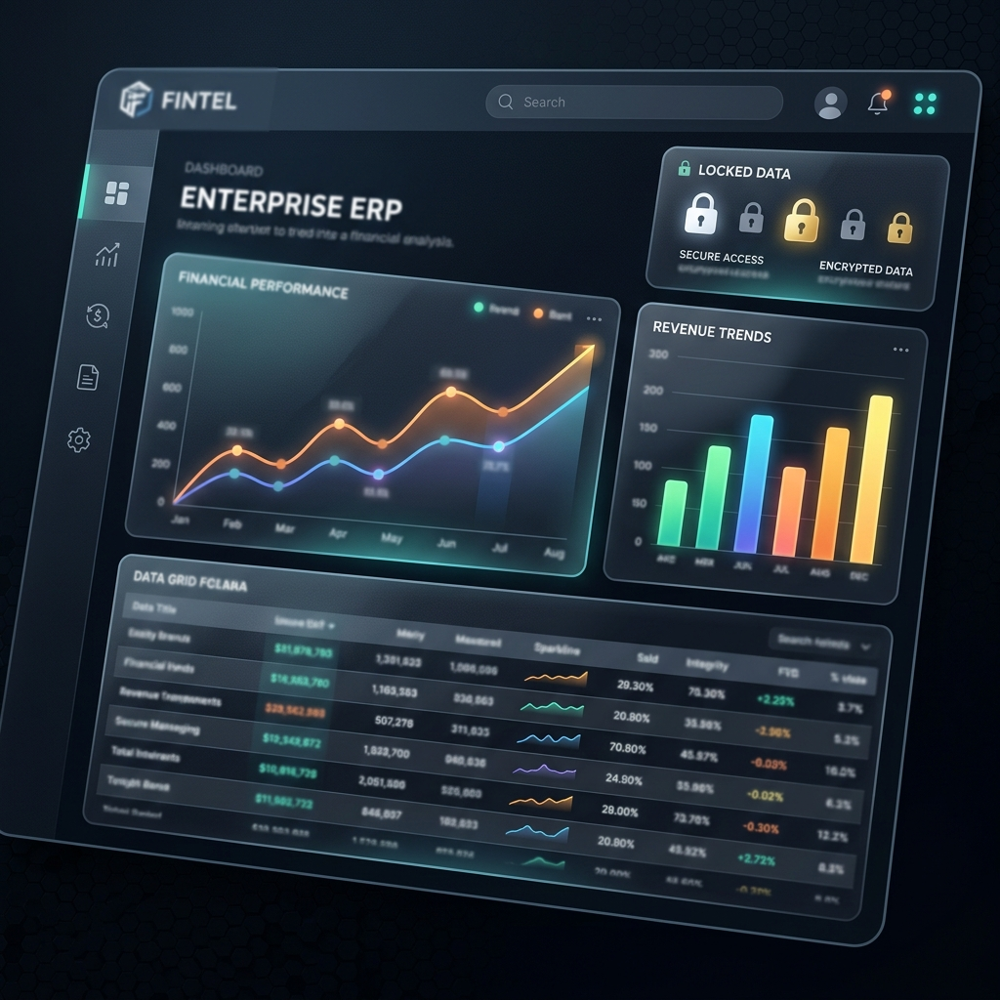
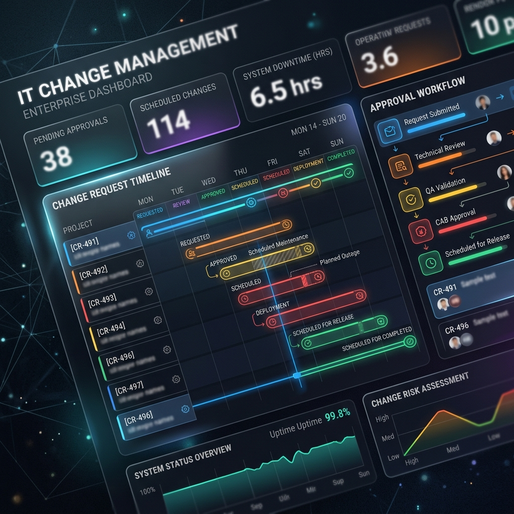
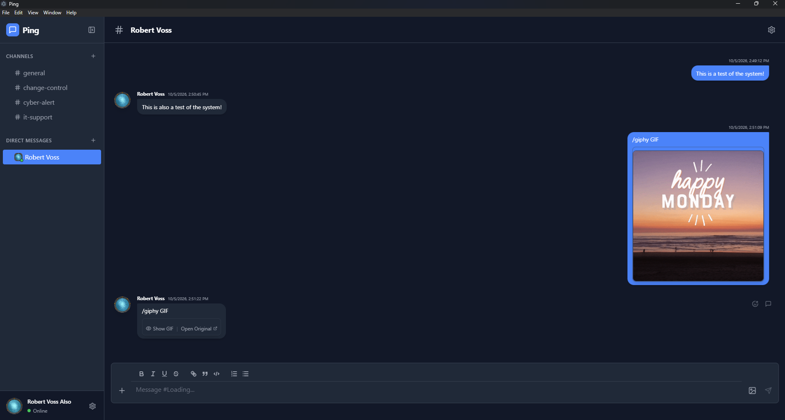
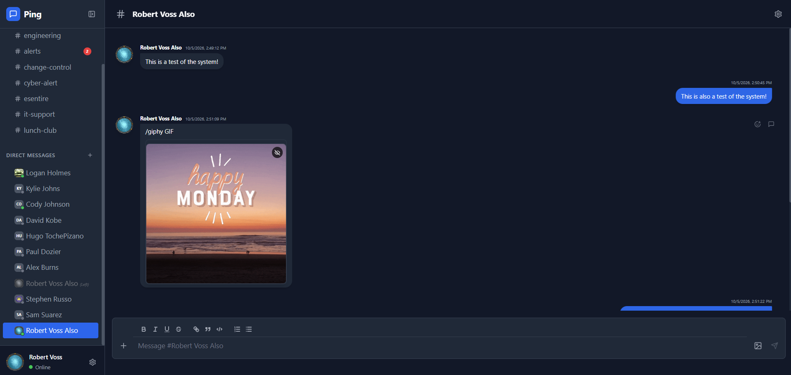
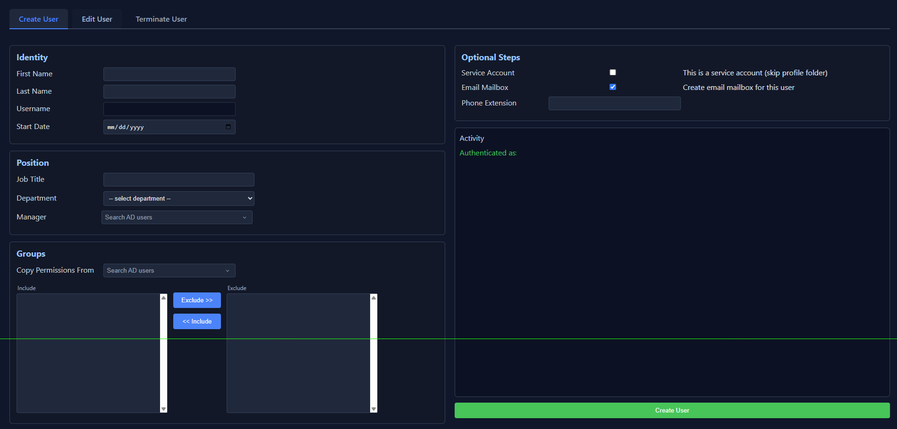
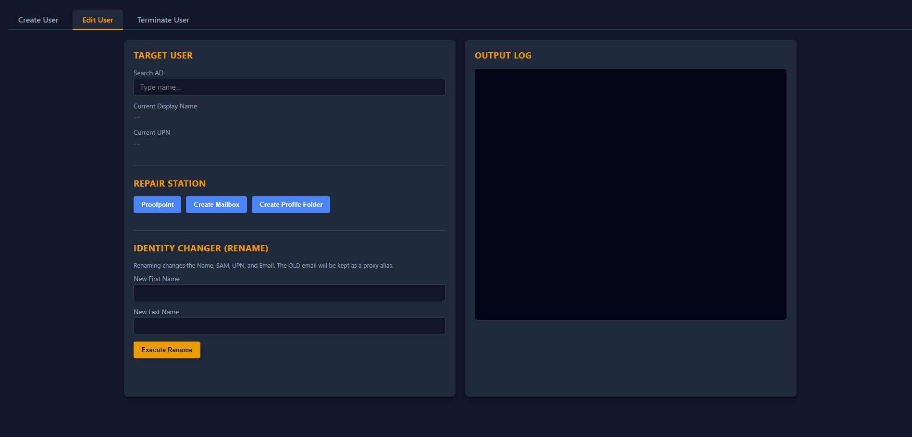
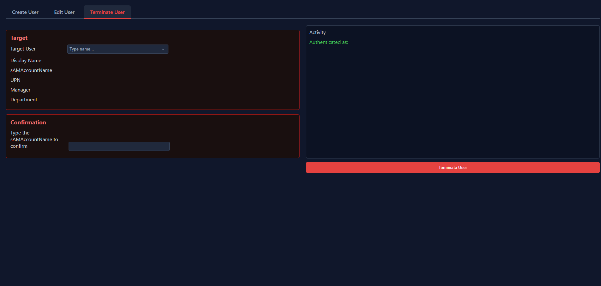
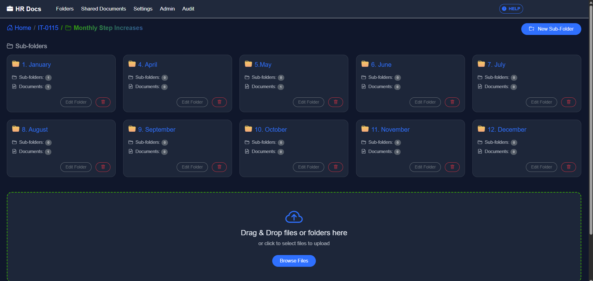

A deep dive into my technical work, ranging from enterprise database migrations
to modern full-stack web applications.
AI Infrastructure & MLOps
Enterprise AI Infrastructure & Tuning
🖥️ On-Premises Dell Server Cluster (4x NVIDIA A100 GPUs)
Challenge: The organization required a secure, air-gapped AI environment to analyze sensitive documents and prevent external data leakage to public models. Crucially, the solution needed to serve multiple distinct departments (Legal, IT, HR) without cross-contamination of highly specialized knowledge.
Solution: Architected and deployed a massive on-premises AI server cluster for the entire enterprise using Docker, Ollama, and OpenWebUI. I custom-tuned an open-source 116.8B parameter model into several specialized variants, providing dedicated secure models for Legal, IT, and HR.
Key Features & Impact:
Multimodal Vision: Integrated LLaVA and Llama Vision, allowing the AI to ingest screenshots and documents across all departments for rapid contextual analysis and troubleshooting.
Specialized RAG & Routing: Deployed distinct document repositories for Lawyers, IT, and HR. The AI intelligently routes queries to the correct domain-specific repository or performs web searches, drastically increasing efficiency and eliminating AI hallucinations.
Natural Voice AI: Implemented the tts-1 engine for fluid, human-sounding voice conversations with the assistant.
Technical Deep Dive
Hardware Infrastructure: Enterprise Dell Server equipped with 4x NVIDIA A100 GPUs (376GB Total VRAM).
Model Fine-Tuning: Utilized parameter-efficient fine-tuning (PEFT) techniques to adapt the oss-gpt 116.8B model for internal compliance.
Containerization: Fully Dockerized deployment leveraging Ollama API endpoints for seamless integration with internal tools.
Enterprise Architecture & FinTech
Custom Financial ERP & Procurement System

?? Abstracted UI Representation (Real system is secured and confidential)
Challenge: The organization needed a centralized, highly secure Enterprise Resource Planning (ERP) system to handle massive financial operations including Treasurer ledgers, paystubs, and decentralized Procurement card (p-card) transactions across all departments.
Solution: I single-handedly architected and am actively developing a comprehensive, live production ERP. The system securely ingests raw bank files, normalizes vendor data via custom rules engines, and provides sleek web interfaces for decentralized departmental data entry, splitting transactions, and reconciliation.
Key Features & Impact:
Massive Cost Savings & Reliability: Replaced an unreliable legacy system with a modern architecture, significantly increasing overall uptime while saving the organization an estimated $2M per year in comparable enterprise licensing fees.
Treasurer & Accounting Module: Accurately tracks the organization's ledgers, checks, fund transfers, and generates secure paystubs.
Automated Data Normalization: Built a data pipeline (functioning similarly to email rules) that ingests raw bank CSVs and automatically normalizes disparate vendor codes (e.g. AMZ018486) into clean entities (e.g. Amazon).
Decentralized P-Card Reconciliation: Created a secure web portal for cardholders to log in, define purchases, split transactions across multiple fund line items, and finalize historical reconciliations.
Immutable Auditing: Every data entry and reconciliation is securely stored in the ERP database with strict tracking of who made the change and when.
Admin & Fuel Tracking Dashboards: Designed high-level reporting dashboards for admins to monitor monthly transaction volumes, pending reconciliations, and specialized dashboards for fleet vehicle fuel tracking (gallons used per user/vehicle).
Technical Deep Dive
Architecture: C# ASP.NET web application with a robust SQL Server backend designed to handle strict financial compliance and immutable transaction ledgers.
Data Pipelines & APIs: Built complex data pipelines for seamless external vendor API integrations, as well as critical bridges to legacy internal systems to ensure continuity of operations during phased migrations.
Security First: Role-Based Access Control (RBAC) ensuring department heads only see their funds, while providing global oversight to the Treasurer and Procurement admins.
DevOps, Workflow Automation & Security
Enterprise IT Change Control System

?? Abstracted Change Management Dashboard
Challenge: With various enterprise departments (e.g., the GIS team in the Assessor's Office) pushing updates that affect shared IT infrastructure, uncoordinated changes often led to overlapping maintenance windows, false alarms in the Security Operations Center (SOC), and unexpected downtime.
Solution: Developed a centralized, highly automated Change Control platform used by IT and expanded enterprise-wide. The system visualizes all upcoming downtime, automatically enforces approval workflows, and seamlessly integrates with monitoring tools and communication channels.
Key Features & Impact:
Enterprise Cost Savings: By building this custom solution internally, the organization avoids an estimated $75,000 to $100,000+ per year in comparable enterprise ITSM (IT Service Management) licensing fees.
Real-Time SignalR Dashboard: Visual timeline powered by SignalR WebSockets instantly pushes approved changes to the live dashboard, immediately highlighting conflicts and ensuring nobody is blindsided by maintenance.
Smart Departmental Routing: Reads dependency tags from our monitoring environment to automatically email specific stakeholders (e.g., Emergency Management, Assessors) whenever a system they rely on (like ARC mapping) is scheduled for downtime.
Automated SOC & Monitoring Integration: Automatically pauses alerts in our monitoring systems for affected servers during the change window and notifies the SOC to prevent false positive alarms.
Ping Messaging Integration: Integrates directly with the Ping Enterprise Messaging system (which I also built) for instant alerts on change submissions, approvals, and rejections.
Director Approval Workflow & Analytics: Enforces a strict review chain for directors, backed by granular graphing and metric reporting on change types, requesting departments, and rollback rates.
Technical Deep Dive
Architecture & Auditing: C# ASP.NET Core backend with a robust SQL Server database, ensuring a permanent, immutable history of all changes for strict compliance and historical auditing.
API Integrations: Extensive use of REST APIs to control third-party monitoring systems and custom webhooks for Ping/Email notifications.
Real-Time Communication
Ping: Enterprise Messaging System

💻 Native Desktop Application

🌐 Web Browser Interface
Challenge: The organization faced a $100,000/year quote for Slack
which offered insufficient data retention (90 days vs 1 year required) and lacked
critical government compliance features (FOIA auditing).
Solution: Architected and built a fully on-premise, real-time messaging
platform using C# and SignalR backed by SQL Server. It provides instant communication
while adhering to strict legal and accessibility standards.
Key Features & Impact:
$100k Annual Savings: Eliminated the need for expensive third-party
SaaS licensing.
Government Compliance: Built-in HR audit portals for FOIA requests
and harassment investigations; 1-year data retention policy enforced at the database
level.
Full Accessibility (ADA): Engineered front-end with high-contrast
modes, scalable typography, and reduced motion settings.
Departmental Security: Granular RBAC permissions ensure department
isolation while permitting secure interdepartmental communication.
Technical Deep Dive
Real-Time Engine: Leveraged SignalR over WebSockets for
instant message delivery, typing indicators, and presence detection.
Data Persistence: All messages, preferences, and gifs are
stored in a normalized SQL Server schema with partitioning for efficient
historical queries.
Security: Permissions are managed via SQL-backed roles,
ensuring data integrity and access control down to the channel level.
Full Stack & Automation
UserForge

✨ Account Creation

📝 Account Management

🛑 Secure Termination
Challenge: Manual creation of Active Directory accounts took 30+
minutes per user, was prone to human error, and lacked sufficient logging for security
audits.
Solution: Developed a secure web-based application that standardizes
and automates the entire lifecycle of user account management for the helpdesk.
Key Features & Impact:
98% Efficiency Gain: Reduced account creation time from 30 minutes
to 30 seconds.
Security & Accountability: Implemented granular permission controls
and comprehensive logging for all actions.
Error Reduction: Standardized inputs and automated validation
eliminated inconsistency and human error.
Technical Deep Dive
Architecture: Node.js/Express interface to Active Directory via
secure LDAP.
Challenge: Mitigating race conditions during bulk account
creation by implementing a Redis-backed job queue.
Security: Full AES-256 encryption for data in transit and at
rest; immutable audit logging.
Full Stack, Workflow Automation & Security
HR Payroll & Document Management System

📄 Secure Document Portal & Payroll Dashboard
Challenge: The HR team spent 2 weeks/month manually calculating step-increases and generating evaluation letters. Additionally, sensitive employee documents were stored on standard network drives, causing accidental deletions, security risks, and heavy IT Helpdesk burdens.
Solution: Built a unified C# web application integrated with the ERP system. It automates payroll eligibility checks, pay adjustments, and provides a secure, self-service document portal with immutable auditing tailored specifically to HR's workflow.
Key Features & Impact:
Time & Cost Savings: Saved approx. 240 man-hours per month while avoiding $15k-$50k in third-party vendor licensing costs.
Process Automation: Automated complex 5% step-increase logic and dynamic step-raise letter generation.
Enhanced Security: Documents are stored in a mathematically obfuscated flat architecture to prevent unauthorized network access.
Immutable Auditing: Every view, download, and permission change is tracked and attributed to specific Active Directory accounts.
Technical Deep Dive
Architecture: C# .NET Core backend with a PostgreSQL database and Active Directory SSO integration.
Optimization: Offloaded complex payroll calculations to SQL Stored Procedures for batch performance.
Reliability & Security: Implemented transactional integrity for financial data and secure background workers for PDF generation.